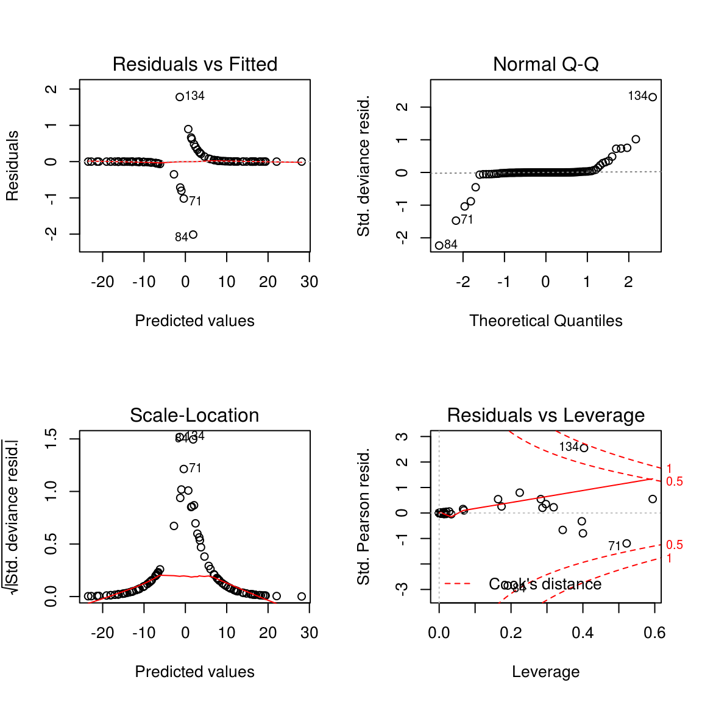

10 Logistic Regression
线性回归是从X预测出Y，Y是数值型；而逻辑回归也是从X预测Y，但Y是二分变量。Fisher线性区分法通过寻找预测值的线性组合使得两组间的差异最大化，以此来预测分组的归属问题。这个方法要求预测变量必须是连续型，逻辑回归做为一个superior alternative，允许二分预测变量。
Y值是二分变量，以(0,1)表示，我们可以把它当成是二项式过程，p是1的比例，q=1-p是0的比例，1代表成功而0代表失败，逻辑曲线，预测值总是0,1之间。
首先把比例转换成odds，如果p是成功概率，那么支持成功的odds是： \[ odds=\frac{p}{q}=\frac{p}{1-p}\]
在逻辑回归中，我们使用的统计量叫分对数(logit)，它是odds的自然对数。 \[ logit = ln(odds) = b_0+b_1x_1+b_2x_2+...+b_kx_k\] 使用线性回归对logit进行预测，
data(iris)
dd=iris[iris$Species != "setosa",]
dd$Species=as.numeric(dd$Species)-2
res=glm(Species ~ Sepal.Length+ Sepal.Width+ Petal.Length + Petal.Width, data=dd, family="binomial")
summary(res)##
## Call:
## glm(formula = Species ~ Sepal.Length + Sepal.Width + Petal.Length +
## Petal.Width, family = "binomial", data = dd)
##
## Deviance Residuals:
## Min 1Q Median 3Q Max
## -2.01105 -0.00541 -0.00001 0.00677 1.78065
##
## Coefficients:
## Estimate Std. Error z value Pr(>|z|)
## (Intercept) -42.638 25.707 -1.659 0.0972 .
## Sepal.Length -2.465 2.394 -1.030 0.3032
## Sepal.Width -6.681 4.480 -1.491 0.1359
## Petal.Length 9.429 4.737 1.991 0.0465 *
## Petal.Width 18.286 9.743 1.877 0.0605 .
## ---
## Signif. codes: 0 '***' 0.001 '**' 0.01 '*' 0.05 '.' 0.1 ' ' 1
##
## (Dispersion parameter for binomial family taken to be 1)
##
## Null deviance: 138.629 on 99 degrees of freedom
## Residual deviance: 11.899 on 95 degrees of freedom
## AIC: 21.899
##
## Number of Fisher Scoring iterations: 10结果使用的是Wald z statistic，分析显示只有Petal.Length是显著的。
res2=glm(Species ~ Petal.Length, data=dd, family="binomial")
summary(res2)##
## Call:
## glm(formula = Species ~ Petal.Length, family = "binomial", data = dd)
##
## Deviance Residuals:
## Min 1Q Median 3Q Max
## -2.11738 -0.12758 -0.00009 0.05865 2.57260
##
## Coefficients:
## Estimate Std. Error z value Pr(>|z|)
## (Intercept) -43.781 11.110 -3.941 8.12e-05 ***
## Petal.Length 9.002 2.283 3.943 8.04e-05 ***
## ---
## Signif. codes: 0 '***' 0.001 '**' 0.01 '*' 0.05 '.' 0.1 ' ' 1
##
## (Dispersion parameter for binomial family taken to be 1)
##
## Null deviance: 138.629 on 99 degrees of freedom
## Residual deviance: 33.432 on 98 degrees of freedom
## AIC: 37.432
##
## Number of Fisher Scoring iterations: 8AIC(Akaike information criterion)用来度量模型拟合，它度量使用模型来描述Y变量信息损失的相对量，值越小，模型越好。 AIC可以用来做模型选择。像上面res和res2分别使用多个变量和单一变量来做拟合，AIC分别为21.9和37.43，显然第一个模型，使用多个变量来做拟合效果要好。
模型拟合可以使用卡方检验来检验拟合得好不好，检验的是null deviance (the null model)和fitted model的差别。
with(res, pchisq(null.deviance-deviance, df.null-df.residual, lower.tail=FALSE))## [1] 1.947107e-26p值很小，证明模型是非常好的。
par(mfrow=c(2,2))
plot(res) 同样可以用plot画出各种图，来辅助诊断。
logit=log(res$fitted.values/(1-res$fitted.values))
plot(logit, res$fitted.values)mean(round(res$fitted.values) == dd$Species)## [1] 0.98从数值上看，98%的数据归类是正确的。当然这个也可以使用卡方检验来检验：
dd$fitted=round(res$fitted.values)
chisq.test(with(dd, table(fitted, Species)))##
## Pearson's Chi-squared test with Yates' continuity correction
##
## data: with(dd, table(fitted, Species))
## X-squared = 88.36, df = 1, p-value < 2.2e-16逻辑回归也有很多alternative的方法，比如 \(Hotelling's\; T^2\) 和Probit regression.